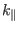
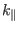

Next: Poloidal angle used in Up: Magnetic surface coordinates general Previous: Form of operator in
Equation (260) indicates that, for the differential equation
(256), there is a resonant response to a perturbation
on a magnetic surface with
. Therefore, the
magnetic surface with  is called the ``resonant surface'' for the
perturbation
. The phase change of the
perturbation along a magnetic field is given by
, which can be written as
. Since
on a resonant surface, the above formula indicates that there is no phase
change along a magnetic field line on a resonant surface, i.e., the parallel
wavenumber
 is zero on a resonant surface.
is called the ``resonant surface'' for the
perturbation
. The phase change of the
perturbation along a magnetic field is given by
, which can be written as
. Since
on a resonant surface, the above formula indicates that there is no phase
change along a magnetic field line on a resonant surface, i.e., the parallel
wavenumber
 is zero on a resonant surface.